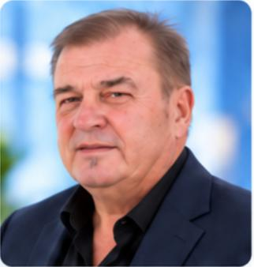
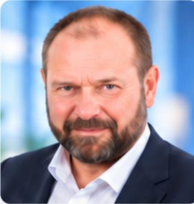

Norman
Président
Comprendre les réalités du terrain. Construire des propositions utiles. Agir avec responsabilité.
Angers au Cœur est un mouvement politique indépendant, ancré dans son territoire et ouvert à la participation de celles et ceux qui souhaitent comprendre les enjeux publics, contribuer à la réflexion collective et faire émerger des propositions sérieuses.
Notre conviction est simple : la politique ne doit pas exister seulement pendant les campagnes électorales. Elle doit aussi se construire entre les scrutins, à partir des problèmes vécus, des besoins du terrain, des connaissances disponibles et du débat collectif.
Notre indépendance se traduit dans la manière d’évaluer une proposition : selon nos principes, son efficacité, son coût, sa faisabilité et ses conséquences, plutôt que son origine partisane.
Proposer une idéeDes membres engagés donnent de leur temps et de leur énergie pour faire vivre le mouvement.
Président

Vice-président
Secrétaire

Trésorier
Trésorière adjointe
Secrétaire adjointe
Communication numérique
Média
Les fonctions du Bureau sont distinctes des responsabilités de communication, des fonctions dans les pôles et des droits techniques de l’espace adhérent.
Au kiosque du Jardin du Mail, le 19 septembre 2026, Angers au Cœur est allé à la rencontre des participants.
Les habitants apportent leurs constats et leurs idées. Les pôles confrontent les points de vue et approfondissent les sujets. Une position officielle suppose ensuite une validation politique explicite.
Recueillir des questions, des expériences et des propositions, lors des rencontres ou par le formulaire public.
Établir les faits, identifier qui décide, comparer les options et leurs conséquences.
Distinguer les travaux en cours des positions officiellement validées par le mouvement.
Vous pouvez proposer une idée sans adhérer, venir échanger lors d’une rencontre ou rejoindre les travaux des pôles en tant qu’adhérent.
Votre soutien et votre engagement font la différence.